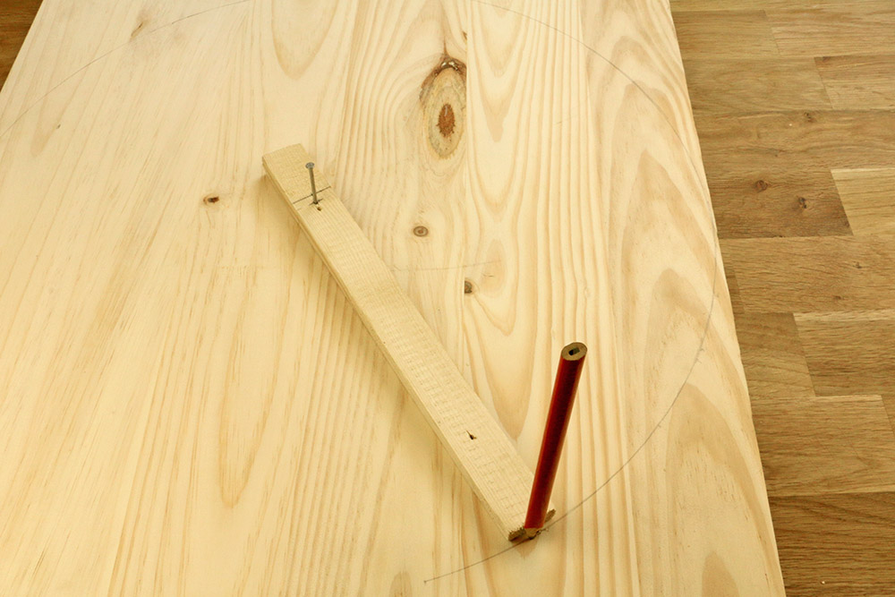
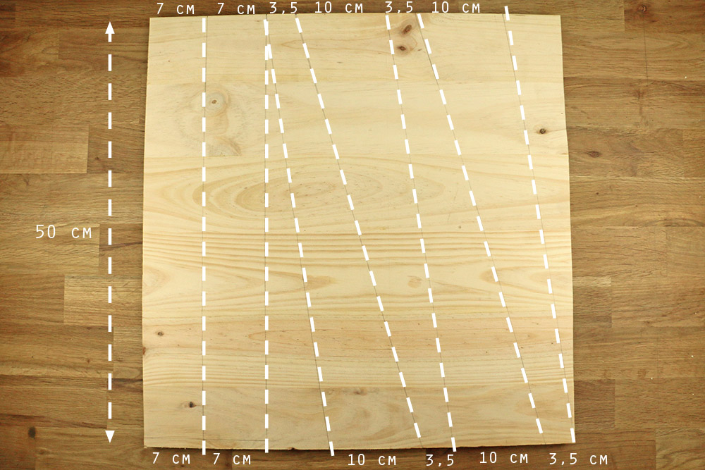
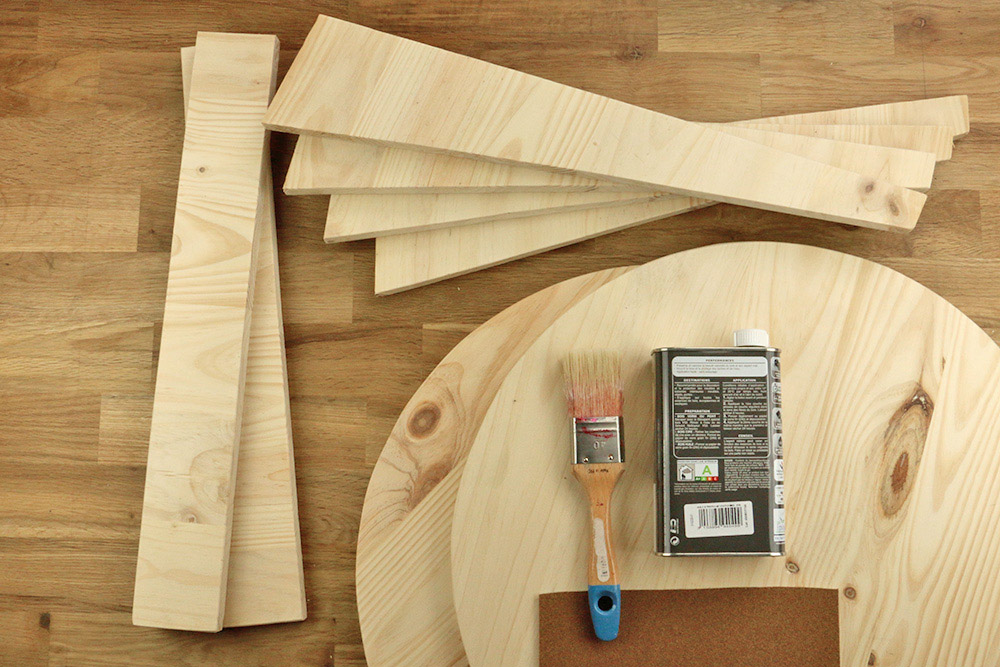
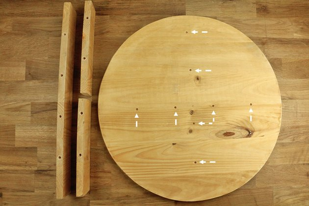
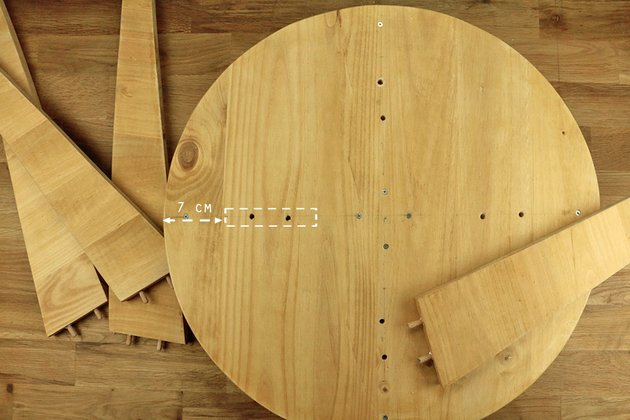
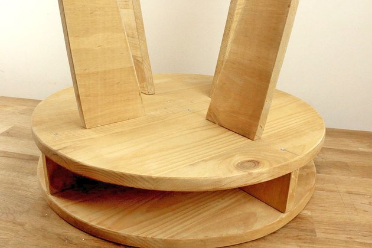

Description
Avec ses lignes épurées et son utilisation raffinée des matières naturelles, le design scandinave mérite amplement sa réputation, si bien que les pièces vintages s'arrachent dans les brocantes. Alors pourquoi ne pas fabriquer vous-même votre meuble scandinave ?
C'est pourquoi, nous vous proposons d'apprendre à créer une petite table en bois d'inspiration scandinave. Dans un style actuel, elle pourra facilement s'adapter à votre intérieur zen, industriel ou rustique. À vous de voir si elle sera mieux à côté de votre lit ou dans votre salon !
Durée : 4h00
Compétence bricolo :
Matériel
- Une planche en bois (160x50x2 cm)
- Une perceuse avec un forêt bois de 8 mm
- Une scie sauteuse
- De l'huile à bois
- Des vis à bois
- Un tournevis
- Un pinceau
- De la colle à bois
Budget : environ 25 euros
Étapes
1 Découper deux plateaux circulaires Ces plateaux serviront de support principal à la table
Découpez les deux plateaux ronds. Pour cela, tracez un cercle de 50 cm de diamètre sur la planche en bois. Notre astuce : utilisez une ficelle ou un petit morceau en bois que vous clouez au centre d'un carré de 50 cm en positionnant l'extrémité du morceau à 25 cm.
Tournez le morceau en bois en positionnant un crayon à son extrémité pour tracer le cercle. Découpez le cercle à l'aide d'une scie sauteuse. Répétez l'opération pour le deuxième plateau en utilisant le premier pour tracer le cercle.
2 Découper les pieds Les pieds de différentes formes serviront à maintenir la table
Tracez ensuite les pieds ainsi que la croix qui sera positionnée entre les deux plateaux en vous référant aux dimensions indiquées sur la photo.
Nous vous conseillons ici d'utiliser un mètre à ruban et une règle, ou vous pouvez aussi vous servir des bords de la planche en bois pour tracer vos traits.
3 Scier et poncer Cette étape permet d'embellir votre bois
Sciez puis poncez l'ensemble des morceaux en bois. Appliquez une couche d'huile pour bois en respectant bien les indications.
Vous pourrez appliquer plus tard l'huile pour bois pour protéger davantage votre bois et donner un aspect plus brillant à celui-ci.
4 Percer et positionner Bien positionner pour un assemblage facile
Prenez l'un des deux morceaux rectangulaires, reportez la largeur de 2 cm du bois. Sciez le morceau de 7 x 2 cm. Sur le plateau du bas, positionnez les deux morceaux rectangulaires en réalisant une croix. Poncez légèrement si besoin, les bords doivent être parfaitement alignés avant d'assembler les morceaux. Les deux parties de la croix vont être fixées avec quatre tourillons en bois chacune.
Placez les repères sur les longueurs et reportez-les sur le plateau. Percez les trous avec un forêt bois. Notre astuce : il existe des kits d'assemblage très pratiques pour effectuer un repérage et un perçage précis. Ils contiennent un élément qui se fixe sur le forêt à la hauteur souhaitée. A défaut, vous pouvez utiliser un bout de scotch en repère que vous accrochez à la mèche.
5 Assembler Votre table commence à prendre forme
Mettez un point de colle à bois sur chaque extrémité des tourillons, puis assemblez les morceaux. Utilisez la masse pour bien assembler les morceaux. Positionnez le deuxième plateau, puis vissez au niveau de la croix. La face que vous voyez est celle qui sera sous la table. Marquez les emplacements des pieds à 7 cm du bord.
Chaque pied est assemblé avec deux tourillons. Placez les repères et percez les trous pour les tourillons. Assemblez les pieds avec un point de colle à bois sur chaque extrémité des tourillons. Les pieds doivent être très bien fixés pour ne pas bouger. Si besoin, ajoutez des petites équerres en acier.
6 Finaliser Personnaliser votre table
Votre table basse de style scandinave est maintenant terminée. Ajoutez éventuellement une nouvelle couche d'huile si le rendu final ne vous convient pas.
Vous pouvez également peindre le plateau supérieur en blanc ou dans des tons pastel pour une décoration douce et délicate. Vous pouvez l'habiller d'un drap court de couleur neutre.